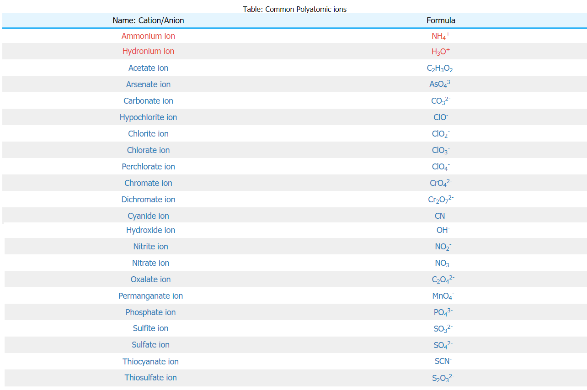

In polyatomic ions, polyatomic (meaning two or more atoms) are joined together by covalent bonds. Although there may be a element with positive charge like H+, it is not joined with another element with an ionic bond. This occurs because if the atoms formed an ionic bond, then it would have already become a compound, thus not needing to gain or loose any electrons. Polyatomic anions are more common than polyatomic cations as shown in the chart below. Polyatomic anions have negative charges while polyatomic cations have positive charges. To indicate different polyatomic ions made up of the same elements, the name of the ion is modified according to the example below:
To combine the topic of acids and polyatomic ions, there is nomenclature of aqueous acids. Such acids include sulfuric acid (H2SO4) or carbonic acid (H2CO3). To name them, follow these quick, simple rules:
© 2019 Quark. All rights reserved. For Educational purposes only.